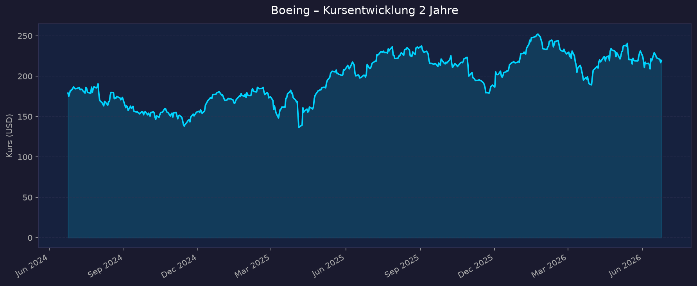
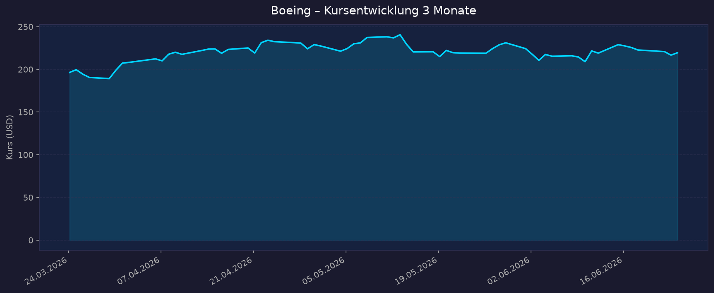

Boeing ist kein klassischer Profitabilitäts-Case. Sehr hohe Verschuldung (Debt/Equity ≈ 8,3), instabiler/zeitweise negativer Gewinn, forward-KGV extrem hoch (~53), Altman-Z im Distress-Bereich (~1,3–1,5). Die Aktie ist ein Turnaround-/Cashflow-Wette, keine Bewertungs-Schnäppchen-Story. Kennzahlen entsprechend kritisch lesen.
📈 1. Kursentwicklung
Aktueller Kurs: ~219,55 USD | Veränderung heute: +1,3 % (Vortagesschluss 216,71)
Chart – 2 Jahre

Chart – 3 Monate

| Zeitraum | Kurs Start | Kurs Ende | Veränderung |
|---|---|---|---|
| 2 Jahre | 179,10 (24.06.2024) | 219,38 | +22,5 % |
| 3 Monate | 196,42 (24.03.2026) | 219,38 | +11,7 % |
| 52-Wochen-Hoch | — | 254,35 | — |
| 52-Wochen-Tief | — | 176,77 | — |
Kurs erholt sich seit den Tiefs 2024; Antrieb ist die Turnaround-Story (Auslieferungen, Cashflow-Wende). Interaktiv: TradingView NYSE:BA
💹 2. KGV-Entwicklung (Kurs-Gewinn-Verhältnis)
Aktuelles KGV (trailing): 86,4 | Forward-KGV: ~52,5 | EPS (TTM): 2,54 USD
| Zeitraum | KGV | Einordnung |
|---|---|---|
| Aktuell (trailing) | ~86 | extrem hoch — kaum belastbar (Gewinn knapp positiv, einmalige Effekte) |
| Forward (2026e) | ~53 | weiterhin sehr hoch; Markt preist künftige Margenerholung |
| Ende 2025 | ~87 (Q4 verzerrt durch Sondereffekt) | Spitzenwert der letzten 10 Jahre |
| Ende 2024 | −9,7 | negativ — Verlustjahr |
| 10-Jahres-Schnitt | ~31,8 | aktuelles KGV ~170 % über dem historischen Mittel |
Bewertung: Das KGV ist als Bewertungsmaßstab praktisch unbrauchbar — der Gewinn ist gerade erst ins Plus gedreht, getrieben von Einmaleffekten (u. a. Verkauf Digital Aviation Solutions in Q4 2025). Bei einer Aktie wie Boeing zählen Free Cashflow, Auslieferungszahlen und Verschuldung weit mehr als das KGV. Für die kommenden 12 Monate ist „n/a / nicht aussagekräftig" die ehrlichste Einordnung.
💰 3. Sales Multiple (Kurs-Umsatz-Verhältnis / P/S)
Aktuelles P/S-Verhältnis (TTM): ~1,88 (Marktkap. ~173 Mrd USD / Umsatz ~92 Mrd USD)
| Zeitraum | P/S Ratio | Einordnung |
|---|---|---|
| Aktuell | ~1,9 | im historischen Rahmen; deutlich aussagekräftiger als das KGV |
| Tendenz 2024–2026 | steigend | mit Kurs- und Umsatzerholung leicht gestiegen |
Trend: Das P/S ist die belastbarere Bewertungsbrücke für Boeing. Mit ~1,9 liegt es im normalen Korridor eines Aerospace-Großkonzerns — weder billig noch extrem teuer. Der Hebel liegt nicht beim Umsatz (der wächst), sondern bei der Marge und beim Cashflow, die erst noch nachhaltig positiv werden müssen.
📊 4. Handelsvolumen (Trading Volume)
| Zeitraum | Ø Tagesvolumen | Auffälligkeiten |
|---|---|---|
| 3-Monats-Durchschnitt | ~6,5 Mio Aktien | rückläufig ggü. 2J-Schnitt — ruhigere Phase |
| 2-Jahres-Durchschnitt | ~8,4 Mio Aktien | erhöht durch Krisen-/Earnings-Spitzen 2024/25 |
| Volumen-Peaks (2J) | bis ~25–30 Mio | rund um Streik, Kapitalerhöhung 2024 und Quartalszahlen |
Volumentrend: Das Volumen hat sich normalisiert — die hektische Krisenphase 2024 (Türplug-Vorfall, Streik, Kapitalerhöhung) ist abgeklungen. Geringeres Volumen bei steigendem Kurs spricht eher für eine ruhige Aufwärtsbewegung als für spekulative Übertreibung.
🏦 5. Insider Trades (letzte ~6 Monate)
| Datum | Name | Funktion | Kauf/Verkauf | Anzahl Aktien | Wert (USD) |
|---|---|---|---|---|---|
| 03.03.2026 | Mortimer J. Buckley | Director | Kauf (Open Market) | 2.230 | ~500.000 (224,20/Aktie) |
| 19.02.2026 | Michael J. Cleary | Officer | Verkauf (Steuer/RSU) | 557 | ~135.000 |
| 17.02.2026 | Ann M. Schmidt | SVP, Chief Comms Officer | Verkauf (Open Market) | 6.281 | ~1,53 Mio (243,37/Aktie) |
| 01–04/2026 | diverse Directors | Board | Phantom-Stock-Grants | 241–465 je | Vergütung (kein Cash-Kauf) |
6-Monats-Überblick: Gemischt. Ein echter Open-Market-Kauf eines Directors (Buckley, ~0,5 Mio USD) ist ein leicht positives Signal; daneben einige Verkäufe, die teils steuer-/vergütungsgetrieben sind (RSU-Vesting). Kein klarer Netto-Kauf- oder Netto-Verkaufstrend, kein auffälliges Cluster-Selling der Führungsebene.
Quelle: SEC Edgar / StockTitan (Form 4). OpenInsider war nicht abrufbar.
🩳 6. Short-Positionen
Aktuelle Short Quote: ~2,05 % des Float (Stand 29.05.2026) — 16,17 Mio Aktien short, 2,4 Tage to cover
| Zeitraum | Short Interest | Veränderung |
|---|---|---|
| Aktuell (Mai 2026) | ~2,05 % (16,2 Mio) | leicht fallend (−0,27 % ggü. Vorperiode) |
| Ende 2024 | Peak ~25 Mio Aktien | deutlich höher (Krisenphase) |
Hinweis: yfinance meldet abweichend nur ~0,07 % Short-Float — vermutlich veralteter/fehlerhafter Datenpunkt. Der MarketBeat-Wert (~2 %) gilt als belastbarer.
Einschätzung: Short-Quote ist niedrig bis normal (~2 %) und seit den Hochs Ende 2024 deutlich zurückgekommen. Die Shorts haben mit der Turnaround-Story Positionen abgebaut — kein erhöhtes Short-Squeeze-Potenzial, aber auch keine breite Skepsis mehr am Markt.
🗞️ 7. Aktuelle Nachrichten
| Datum | Quelle | Nachricht | Relevanz |
|---|---|---|---|
| Apr 2026 | Investing.com | Q1 2026: Earnings-Beat, Verlust verengt, Umsatz +14 % → Aktie legt zu | Hoch |
| Apr 2026 | Tickeron | Rekord-Backlog 695 Mrd USD; Schuldenabbau −6,9 Mrd im Quartal | Hoch |
| 06.06.2026 | Aircraft Insider | 777X: FAA erteilt TIA-Phase 4B — größter Teil der Flugtests freigegeben, Erstauslieferung 2027 | Hoch |
| Jun 2026 | Aerospace Global News | 737-Rate stabil 42/Monat, Ziel 47 (Sommer) → 52/Monat im Jahresverlauf | Hoch |
| Jun 2026 | Boeing Newsroom | MQ-28 Ghost Bat (Defense): erweiterte Kampffähigkeiten auf ILA Berlin gezeigt | Mittel |
| Jun 2026 | Boeing Newsroom | Q4S Quantum-Networking-Satellit: erfolgreiche Entanglement-Swapping-Demo (Space) | Mittel |
| Jun 2026 | MarketBeat | Analystenkonsens „Buy", Ø-Kursziel ~270 USD (~+24 %); JPMorgan-Ziel 245 | Hoch |
| Dez 2025 | Boston Globe / TS2 | Management bekräftigt: 2026 wieder positiver Free Cashflow (1–3 Mrd) | Hoch |
| 2025/26 | diverse | Spirit AeroSystems-Übernahme: Rückintegration des Zulieferers, ~3 Mrd Zusatzschulden | Mittel |
Sentiment: Überwiegend positiv — der Markt honoriert sichtbare operative Fortschritte (Auslieferungen, Backlog, Schuldenabbau) und die in Aussicht gestellte Cashflow-Wende. Belastend bleiben Programmrisiken (777X-Zertifizierung, Defense/Space-Sonderbelastungen).
📋 8. Letzte 3 Quartalsberichte
Q1 2026 (gemeldet April 2026)
| Kennzahl | Ist | Erwartung | Abweichung |
|---|---|---|---|
| Umsatz (Revenue) | 22,2 Mrd USD | ~21,99 Mrd | +14 % YoY, Beat |
| EPS (Core, bereinigt) | −0,20 USD (Verlust) | −0,66 | +0,46 (deutlicher Beat) |
| Nettomarge | negativ (Verlust verengt) | — | — |
| Free Cashflow | −1,5 Mrd USD (Mittelabfluss) | — | saisonal schwaches Q1 |
Guidance: FY 2026 positiver Free Cashflow von +1 bis +3 Mrd USD bekräftigt; Rekord-Backlog 695 Mrd; Schulden −6,9 Mrd im Quartal. Kursreaktion: Aktie legte nach dem Beat zu.
Q4 2025 (gemeldet Januar 2026)
| Kennzahl | Ist | Erwartung | Abweichung |
|---|---|---|---|
| Umsatz (Revenue) | 23,9 Mrd USD | Beat | +57 % YoY, höchstes Quartal seit 2018 |
| EPS (Core) | +9,92 USD | Beat | enthält +11,83 Einmalgewinn aus Verkauf Digital Aviation Solutions |
| Nettomarge | positiv (durch Sondereffekt) | — | nicht operativ nachhaltig |
| Free Cashflow | +375 Mio USD | — | positiv (FY 2025 jedoch −1,9 Mrd) |
Guidance: Weg zurück zu nachhaltig positivem FCF in 2026. Kursreaktion: Positiv aufgenommen.
Q3 2025 (gemeldet Oktober 2025)
| Kennzahl | Ist | Erwartung | Abweichung |
|---|---|---|---|
| Umsatz (Revenue) | 23,3 Mrd USD | Beat | +30 % YoY |
| EPS (Core) | −7,47 USD (Verlust) | — | inkl. −6,45 aus 777X-Charge (4,9 Mrd, non-cash) |
| Nettomarge | stark negativ | — | belastet durch 777X-Abschreibung |
| Free Cashflow | +238 Mio USD | — | erster positiver FCF seit Jahren |
Guidance: 777-9-Erstauslieferung auf 2027 verschoben (Zertifizierungs-Hürden). Kursreaktion: Gemischt — positiver FCF gegen 777X-Charge.
Cashflow-Bild: Q3 +238 Mio → Q4 +375 Mio → Q1 −1,5 Mrd (saisonal). FY 2025 noch −1,9 Mrd, FY 2026e +1 bis +3 Mrd. Die Wende ist eingeleitet, aber noch nicht durchgestanden — S&P sieht ~3 Mrd FCF 2026, mit Ausführungsrisiken.
🌍 9. Marktkontext & Wettbewerb
Markt / Branche: Zivile Luftfahrt (Großraum-Duopol mit Airbus) + Verteidigung/Raumfahrt. Langfrist-Marktprognose: ~43.600 neue Verkehrsflugzeuge 2025–2044 (Boeing Commercial Market Outlook).
| Wettbewerber | Stärke | Schwäche |
|---|---|---|
| Airbus | Marktführer Single-Aisle (A320neo), ~60 % Marktanteil, ~900–1.044 Auslieferungen 2026 vs. Boeing ~708 | Eigene Lieferketten-/Triebwerksengpässe |
| Lockheed Martin / RTX / Northrop | profitablere, stabilere Defense/Space-Bilanzen | weniger Exposure zur zivilen Erholung |
| SpaceX (seit Börsengang 12.06.2026, ~1,75 Bio USD) | dominiert Startmarkt, drückt auf Boeings Space-Relevanz | kein ziviler Flugzeugbau |
Weltraum-Bezug (Einordnung: indirekter Play): Boeing ist kein Pure-Play, sondern ein Aerospace-/Defense-Konzern mit Raumfahrt-Segment in der Sparte Boeing Defense, Space & Security (BDS). Konkrete Space-Programme:
- SLS — Boeing ist Hauptauftragnehmer der Kernstufe von NASAs Space Launch System.
- Starliner — bemannte Raumkapsel (ISS); Festpreisvertrag mit ~2 Mrd USD kumulierten Verlusten/Überläufen, weiter Belastung.
- X-37B — unbemanntes, militärisches Raumflugzeug (geheim).
- Satelliten / Quanten-Networking (Q4S) — Demonstration im Juni 2026.
Wichtig: Das Space-Geschäft ist für Boeing bislang ein finanzieller Drag (wiederholte Sonderbelastungen in BDS, u. a. 1,7 Mrd Charges in Q4 2024), kein Gewinntreiber. Der Investment-Case steht und fällt mit dem zivilen Flugzeuggeschäft (737/787/777X), nicht mit Raumfahrt.
Branchentrends: (1) Zyklische Erholung der zivilen Luftfahrt-Nachfrage; (2) steigende globale Verteidigungsausgaben stützen BDS; (3) SpaceX-Börsengang 2026 verschärft den Wettbewerbs- und Bewertungsdruck im reinen Space-Segment.
Marktposition: In der zivilen Luftfahrt angeschlagener Co-Marktführer unter Druck (Airbus voraus), der operativ aufholt. In Defense/Space etablierter Großkontraktor, aber mit margenschwachen, fehleranfälligen Festpreisprogrammen.
Risiken aus dem Marktumfeld: Regulierung/FAA-Zertifizierung (777X), Lieferketten, Festpreis-Programmrisiken in BDS, hohe Refinanzierungslast, Konjunktur-/Nachfragezyklus der Airlines.
🧮 Bewertungs-Score
| Kriterium | Score (1–10) | Begründung |
|---|---|---|
| Bewertung | 4,0 | KGV als Maßstab unbrauchbar (~86 trailing / ~53 fwd); P/S ~1,9 fair, aber kein Schnäppchen. Bewertung lebt von Hoffnung auf künftige Marge. |
| Wachstum & Momentum | 7,0 | Umsatz +14–57 % YoY, Rekord-Backlog 695 Mrd, steigende 737-Raten, Kurs +22 % in 2J. Starkes operatives Momentum. |
| Bilanz & Sicherheit | 2,5 | Kernschwäche: D/E ≈ 8,3; Nettoschulden ~30 Mrd; Altman-Z ~1,3–1,5 (Distress); FCF erst im Turnaround. Hohe Refinanzierungslast. |
| Qualität & Wettbewerbsposition | 5,5 | Burggraben (Duopol, Backlog) intakt, aber Marktanteilsverlust an Airbus, schwache Margen, fehleranfällige Programme (777X, Starliner). |
| Chancen vs. Risiken | 5,5 | Katalysator: nachhaltige Cashflow-Wende + 777X-Zertifizierung. Dem stehen Bilanz-, Programm- und Ausführungsrisiken gegenüber. |
Gewichteter Gesamtscore: (Bewertung 20 % · Wachstum 20 % · Bilanz 25 % · Qualität 20 % · Chancen/Risiken 15 %) = 0,8 + 1,4 + 0,625 + 1,1 + 0,825 = ≈ 4,8 / 10
Einordnung: Spekulativer Turnaround-Wert. Operatives Momentum gut, aber die schwache Bilanz (hohe Verschuldung, Distress-Z-Score) zieht den Score deutlich nach unten. Kein konservatives Qualitäts-Investment.
5-Jahres-Szenario (Horizont 2031)
| Szenario | Annahmen | Kurs 2031 | Gesamtrendite ggü. ~219 USD |
|---|---|---|---|
| Bär | Cashflow-Wende verpufft, 777X-Verzögerungen, Kapitalmaßnahme/Verwässerung, Rezession | ~140 USD | ≈ −36 % |
| Base | FCF nachhaltig +5–8 Mrd/Jahr, Schuldenabbau, 777X 2027 in Dienst, Margen normalisieren | ~300 USD | ≈ +37 % |
| Bull | Voller Turnaround, Investment-Grade-Upgrade, Rekordauslieferungen, Defense/Space-Stabilisierung | ~420 USD | ≈ +92 % |
Keine Dividende (ausgesetzt seit 2020 wegen Krise/Verschuldung; Wiederaufnahme erst nach Bilanzsanierung realistisch). Renditen rein aus Kurs.
📝 Gesamteinschätzung
Stärken:
- Rekord-Auftragsbestand (695 Mrd USD) und stabiles Duopol mit Airbus — struktureller Burggraben.
- Sichtbarer operativer Turnaround: Umsatz kräftig steigend, 737-Raten hoch, FCF in Q3/Q4 2025 erstmals wieder positiv.
- Aktiver Schuldenabbau (−6,9 Mrd in Q1 2026) und glaubhafte FCF-Guidance +1–3 Mrd für 2026; Analystenkonsens „Buy", Ø-Ziel ~270 USD.
Risiken:
- Sehr hohe Verschuldung (D/E ≈ 8,3) und Altman-Z im Distress-Bereich (~1,3–1,5) — Bilanz bleibt die größte Schwachstelle; hohe Refinanzierungslast.
- Gewinn instabil/zeitweise negativ, KGV als Bewertung unbrauchbar; Q4-Gewinn stark von Einmaleffekt getragen.
- Programmrisiken: 777X-Zertifizierung (Erstauslieferung erst 2027), Festpreis-Charges in Defense/Space (Starliner ~2 Mrd Verluste, 777X 4,9 Mrd Charge).
- Marktanteilsverlust an Airbus in der zivilen Luftfahrt; Space-Segment ist Drag, kein Treiber.
Fazit: Boeing ist ein spekulativer Turnaround-Case mit klarem operativem Momentum, aber fragiler Bilanz. Die Investment-Story hängt fast vollständig am zivilen Flugzeuggeschäft und an der Frage, ob der Free Cashflow 2026 nachhaltig ins Plus dreht — der Weltraum-Bezug (SLS, Starliner, X-37B, Satelliten) ist real, aber indirekt und bislang verlustträchtig. Für risikobewusste Anleger ein Wette auf die Sanierung; für sicherheitsorientierte Anleger schließen die hohe Verschuldung und der Distress-Z-Score die Aktie eher aus. Gesamtscore ≈ 4,8/10.
Datenquellen: Yahoo Finance · yfinance · MarketBeat · Investing.com · Tickeron · The Motley Fool · SEC Edgar · StockTitan · Aerospace Global News · Aircraft Insider · Boeing Newsroom · Space & Defense · Wikipedia · Boston Globe / TS2 · Statista Datenstand 2026-06-24. Keine Anlageberatung — rein informative Auswertung öffentlicher Daten.